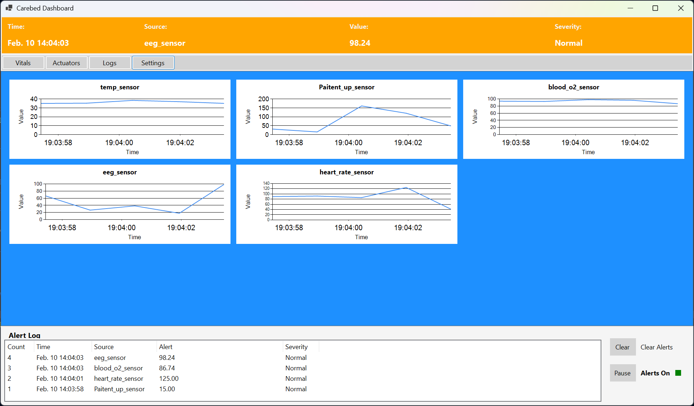
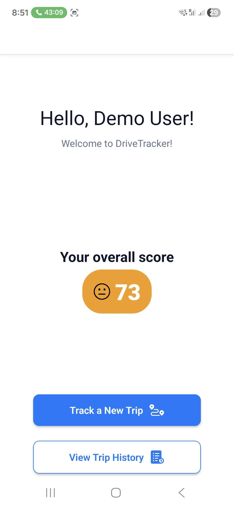
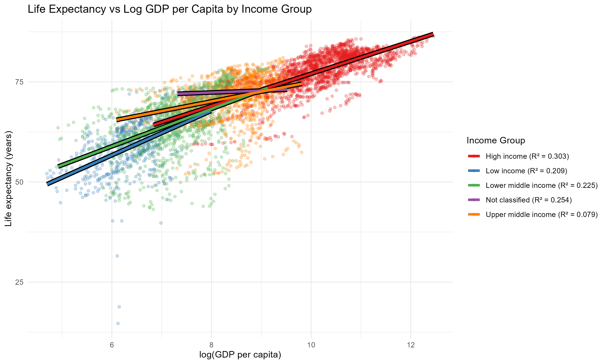
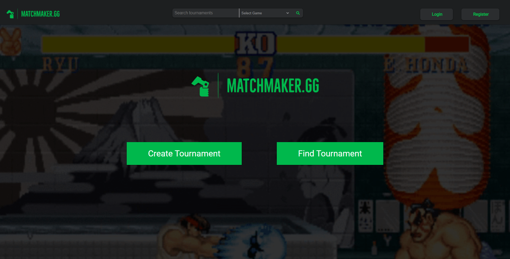

Bachelor of Computer Science — Honours (Co-op)
Sept 2024 – Apr 2027 (expected)
Conestoga College, Waterloo, Ontario
I'm a Computer Science co-op student at Conestoga College (graduating April 2027) with a background in backend systems, event-driven architecture, and web development. I've built the infrastructure side of multi-person software projects - logging, routing, data pipelines, and REST APIs - and have professional experience maintaining a live production site as the sole technical contact.
I'm seeking a backend, software development, QA or web development co-op for Fall 2026 or Winter/Spring 2027. Available on-site, hybrid, or remote - open to relocation.

Carebed — event-driven sensor aggregation system, C#/.NET
Carebed was a 4-person group project to build a modular, event-driven system in C#/.NET that aggregates data from medical sensors into a unified pipeline. I built the sensor layer from scratch: the ISensor interface, an abstract base class, and four concrete sensor implementations (temperature, blood oxygen, heart rate, and EEG). I also built the SensorManager, refactored the EventBus to use the observer pattern and handle exceptions properly, implemented the Logger, and wrote integration tests covering the SensorManager-to-EventBus and EventBus-to-Logger connections. The main design decision I made was pulling out an abstract base class for sensors rather than implementing ISensor directly on each one, which made adding new sensor types a lot cleaner. If I did it again I would write the tests alongside the implementation rather than in a separate pass at the end.
View on GitHub
DriveTracker — GPS trip scoring app, React Native / Node.js
DriveTracker was a 4-person group project to build a mobile app that records GPS trip data and scores driving behaviour. I built the scoring engine: functions to calculate distance between GPS coordinates, total distance travelled, average speed in km/h, and individual scores for braking, acceleration, and speed, which roll up into an overall trip score. I also built the backend for storing and retrieving pending trips, and built the Home and History controllers and views. The main thing I had to work through was figuring out the right thresholds and weighting for the scoring metrics so the scores felt meaningful rather than arbitrary. If I went back to it I would add unit tests for the scoring functions since they were the most logic-heavy part of the codebase and the easiest place for a calculation bug to go unnoticed.
View on GitHub
GDP vs. Life Expectancy — data analysis and visualization in R
DriveTracker — GPS trip scoring app, React Native / Node.js
This was a 5-person data analysis project looking at the relationship between GDP per capita and life expectancy across multiple countries using World Bank data. I wrote all of the R code: the data cleaning and preprocessing scripts, the statistical analysis, and the visualizations including scatter plots with r² labels comparing log-transformed and raw GDP against life expectancy. The other members handled the written report. The main decision I made on the technical side was producing both log-scaled and non-log-scaled versions of the graphs because the log transformation made the trend line much cleaner but obscured how the data actually distributed at lower GDP values, and we needed both to tell the full story. The key finding was the existence of a strong, statistically significant, positive correlation between log GDP per capita and life expectancy, with r² of X.
View on GitHub
Matchmaker — tournament management web app, Ruby on Rails
Matchmaker was a 3-person group project to build a tournament management web app in Ruby on Rails, built during the Lighthouse Labs bootcamp in January 2022. I did most of the backend work: setting up the initial project structure and resolving gem and Rails version conflicts to get the app running, designing the database schema and seeds, building tournament search, the tournament creation form and join logic, and the full matches feature including scaffolding, business logic, and match result updates. The trickiest part was getting the seeds and tournament rendering working together correctly since the data relationships needed to be set up in the right order. If I were to redo it now I would plan the schema more carefully upfront before writing any logic, since we had to go back and fix the seeds a few times as the data model evolved.
View on GitHub